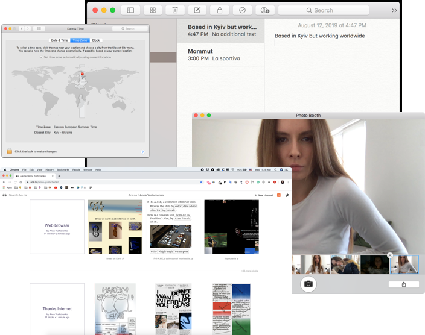
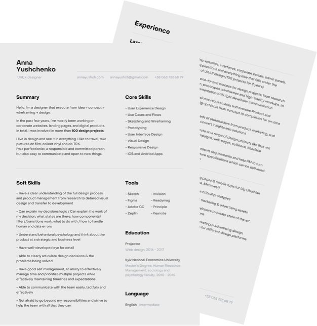
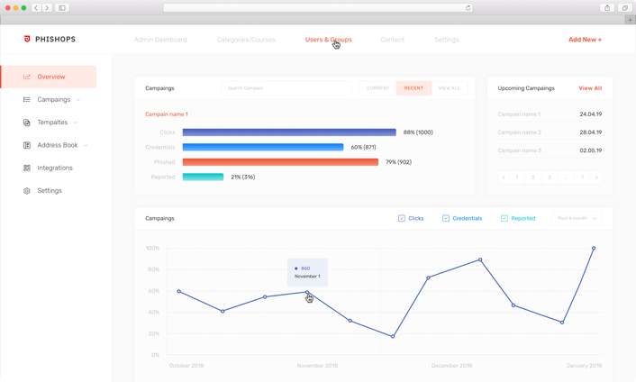

In the
past few years,
I’ve mostly been working on
corporate websites, landing
pages, and digital products.
In total, I was involved in more
than
100 design projects.
I’ve mostly been working on
corporate websites, landing
pages, and digital products.
In total, I was involved in more
than
100 design projects.



